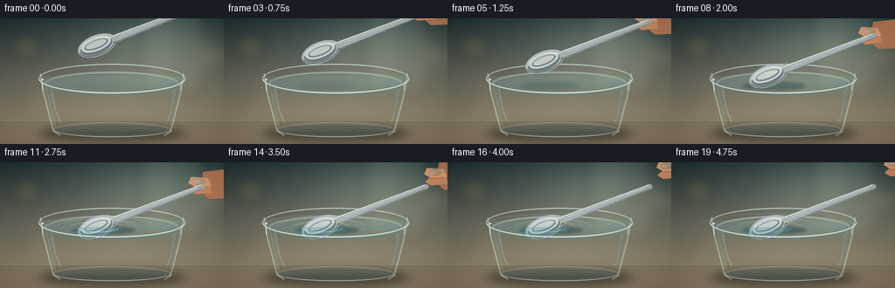
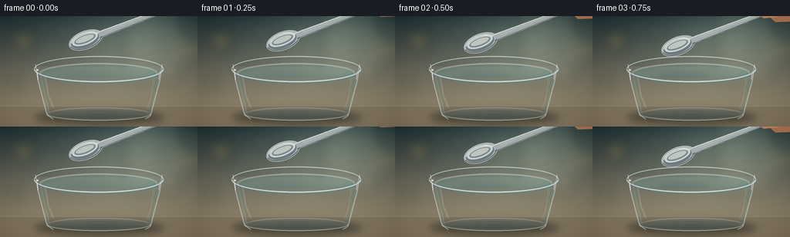

CODING AGENTS AS PIXEL WORLD MODELS
traex/GPT-5.6-Sol · mechanics_0008
点击播放 · 原生 RGB 像素
逐轮保存的候选
回放视频、检查图与代码变化。
每份候选均可单独播放。实际图片检查记录在下方工具轨迹中。
候选 01播放与检查图
点击播放 · 原生 RGB 像素


展开代码变化
--- 上一保存版本
+++ 本次保存版本
@@ -0,0 +1,225 @@
+from pathlib import Path
+import math
+import numpy as np
+import cv2
+from PIL import Image, ImageDraw, ImageFilter
+import artifact_io
+
+W,H,N=256,144,20
+SS=4
+w,h=W*SS,H*SS
+rng=np.random.default_rng(20261110)
+
+def sc(v): return int(round(v*SS))
+def ease(x):
+ x=max(0,min(1,x)); return x*x*(3-2*x)
+
+def rgba_layer(): return Image.new('RGBA',(w,h),(0,0,0,0))
+def comp(base, layer): return Image.alpha_composite(base,layer)
+
+def blur_shape(draw_fn, radius=5, opacity=255):
+ L=rgba_layer(); d=ImageDraw.Draw(L); draw_fn(d)
+ if opacity<255:
+ a=L.getchannel('A').point(lambda p:p*opacity//255); L.putalpha(a)
+ return L.filter(ImageFilter.GaussianBlur(sc(radius)))
+
+def ellipse_bbox(box): return tuple(sc(v) for v in box)
+
+def line(draw, xy, fill, width=1): draw.line([(sc(x),sc(y)) for x,y in xy],fill=fill,width=max(1,sc(width)),joint='curve')
+
+def polygon(draw, pts, fill): draw.polygon([(sc(x),sc(y)) for x,y in pts],fill=fill)
+
+def background(frame):
+ yy,xx=np.mgrid[0:h,0:w]
+ # muted kitchen/cafe background with warm upper wall and cool counter
+ y=yy/SS; x=xx/SS
+ top=np.array([46,64,67.],float); bot=np.array([176,156,125.],float)
+ a=np.clip(y/145,0,1)[...,None]
+ arr=top*(1-a)+bot*a
+ # vignette and broad soft window glow
+ glow=np.exp(-(((x-179)/77)**2+((y-29)/50)**2))[...,None]
+ arr += glow*np.array([34,38,31])
+ counter=np.clip((y-107)/37,0,1)[...,None]
+ arr=arr*(1-counter*.22)+np.array([72,73,67])*counter*.22
+ vig=np.clip(((x-128)/170)**2+((y-72)/115)**2,0,1)[...,None]
+ arr-=vig*18
+ arr=np.clip(arr,0,255).astype(np.uint8)
+ im=Image.fromarray(arr,'RGB').convert('RGBA')
+ # background bokeh and window bars blurred
+ b=rgba_layer(); d=ImageDraw.Draw(b)
+ d.rectangle((sc(160),sc(-5),sc(232),sc(85)),fill=(211,214,189,27))
+ d.rectangle((sc(168),sc(-5),sc(171),sc(88)),fill=(29,45,48,32))
+ d.rectangle((sc(208),sc(-5),sc(211),sc(87)),fill=(29,45,48,28))
+ for cx,cy,r,col in [(30,32,15,(226,174,84,45)),(239,43,18,(235,205,133,28)),(18,91,10,(111,166,139,38)),(83,19,9,(226,222,185,24))]:
+ d.ellipse((sc(cx-r),sc(cy-r),sc(cx+r),sc(cy+r)),fill=col)
+ b=b.filter(ImageFilter.GaussianBlur(sc(8)))
+ im=comp(im,b)
+ # tabletop edge and soft horizontal grain
+ t=rgba_layer(); dt=ImageDraw.Draw(t)
+ dt.rectangle((0,sc(117),w,h),fill=(82,74,63,42))
+ line(dt,[(0,117),(256,117)],(242,225,190,25),1)
+ for i in range(8):
+ yy0=121+i*3.4
+ line(dt,[(0,yy0),(256,yy0+0.4)],(33,31,29,8),.4)
+ return comp(im,t)
+
+def draw_glass_base(im, frame):
+ # contact shadow
+ sh=blur_shape(lambda d:d.ellipse(ellipse_bbox((44,123,213,141)),fill=(10,16,16,125)),5)
+ im=comp(im,sh)
+ L=rgba_layer(); d=ImageDraw.Draw(L)
+ # transparent vessel body, subtly blue-green
+ d.polygon([(sc(46),sc(66)),(sc(210),sc(66)),(sc(195),sc(130)),(sc(62),sc(130))],fill=(160,209,205,24))
+ # water volume
+ d.polygon([(sc(51),sc(74)),(sc(205),sc(74)),(sc(193),sc(127)),(sc(63),sc(127))],fill=(94,174,186,39))
+ # underwater vertical brightness gradient approximated bands
+ for i in range(13):
+ y0=78+i*4
+ inset=6+(y0-74)*.12
+ d.rectangle((sc(52+inset),sc(y0),sc(204-inset),sc(y0+4.2)),fill=(133,203,208,3+i//4))
+ # bottom refraction
+ d.ellipse(ellipse_bbox((61,119,195,136)),fill=(108,184,188,34),outline=(226,244,238,80),width=sc(1))
+ d.ellipse(ellipse_bbox((66,123,190,132)),outline=(50,112,122,41),width=sc(1))
+ # side edges multiple highlight/refraction lines
+ line(d,[(46,63),(49,83),(61,129),(69,134)],(224,246,241,125),1.25)
+ line(d,[(50,67),(54,84),(64,126)],(255,255,247,48),.65)
+ line(d,[(210,63),(207,84),(195,130),(188,134)],(220,246,242,116),1.2)
+ line(d,[(205,70),(202,91),(193,126)],(48,110,117,38),.8)
+ # slim specular strips
+ line(d,[(58,77),(63,105),(69,119)],(255,255,250,38),2)
+ line(d,[(199,82),(195,108),(191,120)],(255,255,250,28),1.3)
+ im=comp(im,L)
+ # rear rim and water back edge
+ R=rgba_layer(); dr=ImageDraw.Draw(R)
+ # rim glow/back half arcs
+ dr.arc(ellipse_bbox((44,52,212,86)),180,360,fill=(236,252,246,150),width=sc(1.3))
+ dr.arc(ellipse_bbox((47,55,209,83)),180,360,fill=(62,118,125,80),width=sc(.8))
+ dr.arc(ellipse_bbox((51,61,205,88)),180,360,fill=(190,236,235,111),width=sc(1.0))
+ # water surface transparent fill
+ dr.ellipse(ellipse_bbox((51,62,205,88)),fill=(116,196,204,30))
+ dr.arc(ellipse_bbox((52,62,204,88)),180,360,fill=(235,252,245,89),width=sc(1))
+ return comp(im,R)
+
+def hand_layer(bowl_y, contact_t):
+ # Grip tracks spoon, then lifts toward upper right after release
+ rel=ease((contact_t-.52)/.42)
+ hx=229+rel*29; hy=bowl_y-48-rel*22
+ L=rgba_layer(); d=ImageDraw.Draw(L)
+ # soft hand shadow
+ # palm entering right edge
+ polygon(d,[(hx+2,hy-14),(hx+28,hy-17),(hx+34,hy+16),(hx+8,hy+17),(hx-2,hy+8)],(181,119,83,245))
+ # fingers around handle
+ polygon(d,[(hx-12,hy-8),(hx+8,hy-7),(hx+11,hy+2),(hx-6,hy+4),(hx-15,hy-1)],(220,157,112,255))
+ polygon(d,[(hx-9,hy+3),(hx+10,hy+2),(hx+12,hy+10),(hx-7,hy+12),(hx-14,hy+8)],(202,137,96,255))
+ # knuckle light / nail
+ d.ellipse(ellipse_bbox((hx-11,hy-7,hx+5,hy+1)),fill=(238,181,139,165))
+ d.ellipse(ellipse_bbox((hx-10,hy-5,hx-2,hy-.5)),fill=(245,195,159,180))
+ line(d,[(hx-9,hy+4),(hx+7,hy+3)],(123,75,59,60),.55)
+ # rim light
+ line(d,[(hx-10,hy-8),(hx+7,hy-7),(hx+10,hy-2)],(255,211,168,115),.75)
+ return L
+
+def spoon_layer(cx,cy):
+ # Draw horizontal spoon into full-frame array then rotate about bowl center.
+ L=rgba_layer(); d=ImageDraw.Draw(L)
+ Cx,Cy=sc(cx),sc(cy)
+ # shadow beneath geometry, blurred separately later
+ # bowl silhouette 48 x 24, handle to right
+ d.ellipse((Cx-sc(23),Cy-sc(12),Cx+sc(23),Cy+sc(12)),fill=(178,186,187,255))
+ d.polygon([(Cx+sc(13),Cy-sc(4.7)),(Cx+sc(128),Cy-sc(3.1)),(Cx+sc(131),Cy),(Cx+sc(128),Cy+sc(3.1)),(Cx+sc(13),Cy+sc(4.7))],fill=(167,176,177,255))
+ d.ellipse((Cx+sc(122),Cy-sc(3.2),Cx+sc(132),Cy+sc(3.2)),fill=(164,172,173,255))
+ # bowl nested metallic bands
+ d.ellipse((Cx-sc(20),Cy-sc(9.5),Cx+sc(18),Cy+sc(9.5)),fill=(109,123,127,255))
+ d.ellipse((Cx-sc(18),Cy-sc(8.2),Cx+sc(17),Cy+sc(5.8)),fill=(204,213,212,255))
+ d.ellipse((Cx-sc(15),Cy-sc(6.5),Cx+sc(14),Cy+sc(3.7)),fill=(120,139,144,255))
+ d.ellipse((Cx-sc(13),Cy-sc(5.5),Cx+sc(12),Cy+sc(1.8)),fill=(231,235,228,190))
+ # bright sweep and dark underside edge
+ d.arc((Cx-sc(20),Cy-sc(9.5),Cx+sc(18),Cy+sc(9.5)),196,348,fill=(249,251,241,230),width=sc(1.1))
+ d.arc((Cx-sc(22),Cy-sc(11),Cx+sc(22),Cy+sc(11)),15,175,fill=(70,84,88,180),width=sc(1))
+ # handle rails and specular streak
+ line(d,[(cx+15,cy-3.8),(cx+128,cy-2.3)],(232,238,232,230),1.15)
+ line(d,[(cx+18,cy+3.8),(cx+128,cy+2.3)],(66,77,80,180),.85)
+ line(d,[(cx+28,cy-1.1),(cx+123,cy-.65)],(255,255,247,185),.75)
+ # Rotate CCW visually so handle points upper right
+ arr=np.array(L)
+ M=cv2.getRotationMatrix2D((Cx,Cy),21,1.0) # OpenCV positive appears CCW in image
+ out=cv2.warpAffine(arr,M,(w,h),flags=cv2.INTER_CUBIC,borderMode=cv2.BORDER_CONSTANT,borderValue=(0,0,0,0))
+ return Image.fromarray(out,'RGBA')
+
+def draw_ripples(im, strength, phase):
+ if strength<=0: return im
+ L=rgba_layer(); d=ImageDraw.Draw(L)
+ # concentric perspective ripples centered at contact bowl
+ radii=[(29,7),(45,10),(64,13)]
+ for j,(rx,ry) in enumerate(radii):
+ grow=phase*(9+5*j)
+ alpha=int(115*strength*(1-j*.2)*(1-phase*.45))
+ box=(111-rx-grow,75-ry-grow*.18,111+rx+grow,75+ry+grow*.18)
+ # broken arcs make realistic surface ripple behind and sides
+ d.arc(ellipse_bbox(box),195,345,fill=(236,255,250,alpha),width=sc(.8))
+ d.arc(ellipse_bbox(box),15,158,fill=(49,125,139,max(10,alpha//2)),width=sc(.65))
+ return comp(im,L)
+
+def front_glass(im):
+ L=rgba_layer(); d=ImageDraw.Draw(L)
+ # front halves of water and thick glass rim
+ d.arc(ellipse_bbox((51,62,205,88)),5,175,fill=(43,119,133,100),width=sc(1.0))
+ d.arc(ellipse_bbox((44,52,212,86)),2,178,fill=(239,253,247,190),width=sc(1.5))
+ d.arc(ellipse_bbox((47,55,209,83)),3,177,fill=(84,142,147,90),width=sc(.8))
+ # small sparkle points
+ line(d,[(48,73),(49,83)],(255,255,250,190),1)
+ line(d,[(207,72),(206,82)],(255,255,250,150),.8)
+ d.ellipse(ellipse_bbox((47.2,69,49.5,71.3)),fill=(255,255,255,205))
+ # base foreground edge
+ d.arc(ellipse_bbox((61,119,195,136)),4,176,fill=(226,246,239,105),width=sc(1.1))
+ return comp(im,L)
+
+def make_frame(i):
+ t=i/(N-1)
+ # Spoon begins clearly suspended, then smoothly lowers. Contact at ~2.5 s.
+ lower=ease(min(1,t/.58))
+ bowl_y=31+(74-31)*lower
+ im=background(i)
+ im=draw_glass_base(im,i)
+ # soft moving spoon shadow on water increases toward contact
+ alpha=int(20+90*lower)
+ sy=77
+ Sh=rgba_layer(); ds=ImageDraw.Draw(Sh)
+ ds.ellipse(ellipse_bbox((84-lower*2,sy-4,151+lower*3,sy+5)),fill=(18,57,65,alpha))
+ Sh=Sh.filter(ImageFilter.GaussianBlur(sc(3.5-2*lower)))
+ im=comp(im,Sh)
+ # hand behind spoon, visible while holding; naturally exits after release
+ im=comp(im,hand_layer(bowl_y,t))
+ sp=spoon_layer(111,bowl_y)
+ im=comp(im,sp)
+ # contact tint/refraction over lower part of bowl only
+ if lower>.94:
+ A=np.array(im)
+ yy,xx=np.mgrid[0:h,0:w]
+ # subtle cool overlay below surface near bowl
+ mask=((xx/SS-110)**2/29**2+(yy/SS-75)**2/8**2<1)&(yy/SS>74)
+ A[mask,:3]=(A[mask,:3]*.72+np.array([72,151,164])*.28).astype(np.uint8)
+ im=Image.fromarray(A,'RGBA')
+ contact=max(0,(t-.48)/.52)
+ pulse=math.exp(-2.0*contact) if contact>0 else 0
+ im=draw_ripples(im,min(1,contact*4)*(.72+.28*pulse),contact)
+ im=front_glass(im)
+ # tiny contact meniscus glint
+ if contact>0:
+ L=rgba_layer(); d=ImageDraw.Draw(L)
+ a=int(170*(1-min(1,contact))*0.7+50)
+ d.arc(ellipse_bbox((88,68,136,80)),12,166,fill=(247,255,249,a),width=sc(.7))
+ im=comp(im,L)
+ # cinematic vignette and very fine texture
+ arr=np.array(im.convert('RGB')).astype(np.float32)
+ yy,xx=np.mgrid[0:h,0:w]; X=xx/SS; Y=yy/SS
+ vig=np.clip(((X-128)/170)**2+((Y-72)/105)**2,0,1)
+ arr*= (1-.10*vig[...,None])
+ noise=rng.normal(0,.55,(h,w,1))
+ arr=np.clip(arr+noise,0,255).astype(np.uint8)
+ out=Image.fromarray(arr).resize((W,H),Image.Resampling.LANCZOS)
+ return np.array(out,dtype=np.uint8)
+
+frames=np.stack([make_frame(i) for i in range(N)])
+artifact_io.save(frames,Path(__file__).resolve().parent)
+print('saved',frames.shape,frames.dtype)
可观测工具轨迹
实际执行的命令与返回图片。
命令 1exit 0
/bin/bash -lc "cat prompt.txt && printf '\\n---RULES---\\n' && cat GENERATION_RULES.md && printf '\\n---SPEC---\\n' && cat task_spec.json"
命令 2exit 1
/bin/bash -lc "find . -maxdepth 2 -type f -printf '%p\\n' | sort && printf '\\n---TOOLS---\\n' && command -v ffmpeg && command -v python3 && python3 - <<'PY' mods=['PIL','numpy','cv2','cairo','moviepy'] for m in mods: try: x=__import__(m); print(m,'OK',getattr(x,'__version__','')) except Exception as e: print(m,'NO',e) PY"
命令 3exit 0
/bin/bash -lc 'cat artifact_io.py'
命令 4exit 0
/bin/bash -lc "(command -v ffmpeg || true); (command -v python3 || true); python3 - <<'PY' mods=['PIL','numpy','cv2','cairo','moviepy','imageio'] for m in mods: try: x=__import__(m); print(m,'OK',getattr(x,'__version__','')) except Exception as e: print(m,'NO',e) PY"
命令 5exit 0
/bin/bash -lc "cat > generate.py <<'PY'
from pathlib import Path
import math
import numpy as np
import cv2
from PIL import Image, ImageDraw, ImageFilter
import artifact_io
W,H,N=256,144,20
SS=4
w,h=W*SS,H*SS
rng=np.random.default_rng(20261110)
def sc(v): return int(round(v*SS))
def ease(x):
x=max(0,min(1,x)); return x*x*(3-2*x)
def rgba_layer(): return Image.new('RGBA',(w,h),(0,0,0,0))
def comp(base, layer): return Image.alpha_composite(base,layer)
def blur_shape(draw_fn, radius=5, opacity=255):
L=rgba_layer(); d=ImageDraw.Draw(L); draw_fn(d)
if opacity<255:
a=L.getchannel('A').point(lambda p:p*opacity//255); L.putalpha(a)
return L.filter(ImageFilter.GaussianBlur(sc(radius)))
def ellipse_bbox(box): return tuple(sc(v) for v in box)
def line(draw, xy, fill, width=1): draw.line([(sc(x),sc(y)) for x,y in xy],fill=fill,width=max(1,sc(width)),joint='curve')
def polygon(draw, pts, fill): draw.polygon([(sc(x),sc(y)) for x,y in pts],fill=fill)
def background(frame):
yy,xx=np.mgrid[0:h,0:w]
# muted kitchen/cafe background with warm upper wall and cool counter
y=yy/SS; x=xx/SS
top=np.array([46,64,67.],float); bot=np.array([176,156,125.],float)
a=np.clip(y/145,0,1)[...,None]
arr=top*(1-a)+bot*a
# vignette and broad soft window glow
glow=np.exp(-(((x-179)/77)**2+((y-29)/50)**2))[...,None]
arr += glow*np.array([34,38,31])
counter=np.clip((y-107)/37,0,1)[...,None]
arr=arr*(1-counter*.22)+np.array([72,73,67])*counter*.22
vig=np.clip(((x-128)/170)**2+((y-72)/115)**2,0,1)[...,None]
arr-=vig*18
arr=np.clip(arr,0,255).astype(np.uint8)
im=Image.fromarray(arr,'RGB').convert('RGBA')
# background bokeh and window bars blurred
b=rgba_layer(); d=ImageDraw.Draw(b)
d.rectangle((sc(160),sc(-5),sc(232),sc(85)),fill=(211,214,189,27))
d.rectangle((sc(168),sc(-5),sc(171),sc(88)),fill=(29,45,48,32))
d.rectangle((sc(208),sc(-5),sc(211),sc(87)),fill=(29,45,48,28))
for cx,cy,r,col in [(30,32,15,(226,174,84,45)),(239,43,18,(235,205,133,28)),(18,91,10,(111,166,139,38)),(83,19,9,(226,222,185,24))]:
d.ellipse((sc(cx-r),sc(cy-r),sc(cx+r),sc(cy+r)),fill=col)
b=b.filter(ImageFilter.GaussianBlur(sc(8)))
im=comp(im,b)
# tabletop edge and soft horizontal grain
t=rgba_layer(); dt=ImageDraw.Draw(t)
dt.rectangle((0,sc(117),w,h),fill=(82,74,63,42))
line(dt,[(0,117),(256,117)],(242,225,190,25),1)
for i in range(8):
yy0=121+i*3.4
line(dt,[(0,yy0),(256,yy0+0.4)],(33,31,29,8),.4)
return comp(im,t)
def draw_glass_base(im, frame):
# contact shadow
sh=blur_shape(lambda d:d.ellipse(ellipse_bbox((44,123,213,141)),fill=(10,16,16,125)),5)
im=comp(im,sh)
L=rgba_layer(); d=ImageDraw.Draw(L)
# transparent vessel body, subtly blue-green
d.polygon([(sc(46),sc(66)),(sc(210),sc(66)),(sc(195),sc(130)),(sc(62),sc(130))],fill=(160,209,205,24))
# water volume
d.polygon([(sc(51),sc(74)),(sc(205),sc(74)),(sc(193),sc(127)),(sc(63),sc(127))],fill=(94,174,186,39))
# underwater vertical brightness gradient approximated bands
for i in range(13):
y0=78+i*4
inset=6+(y0-74)*.12
d.rectangle((sc(52+inset),sc(y0),sc(204-inset),sc(y0+4.2)),fill=(133,203,208,3+i//4))
# bottom refraction
d.ellipse(ellipse_bbox((61,119,195,136)),fill=(108,184,188,34),outline=(226,244,238,80),width=sc(1))
d.ellipse(ellipse_bbox((66,123,190,132)),outline=(50,112,122,41),width=sc(1))
# side edges multiple highlight/refraction lines
line(d,[(46,63),(49,83),(61,129),(69,134)],(224,246,241,125),1.25)
line(d,[(50,67),(54,84),(64,126)],(255,255,247,48),.65)
line(d,[(210,63),(207,84),(195,130),(188,134)],(220,246,242,116),1.2)
line(d,[(205,70),(202,91),(193,126)],(48,110,117,38),.8)
# slim specular strips
line(d,[(58,77),(63,105),(69,119)],(255,255,250,38),2)
line(d,[(199,82),(195,108),(191,120)],(255,255,250,28),1.3)
im=comp(im,L)
# rear rim and water back edge
R=rgba_layer(); dr=ImageDraw.Draw(R)
# rim glow/back half arcs
dr.arc(ellipse_bbox((44,52,212,86)),180,360,fill=(236,252,246,150),width=sc(1.3))
dr.arc(ellipse_bbox((47,55,209,83)),180,360,fill=(62,118,125,80),width=sc(.8))
dr.arc(ellipse_bbox((51,61,205,88)),180,360,fill=(190,236,235,111),width=sc(1.0))
# water surface transparent fill
dr.ellipse(ellipse_bbox((51,62,205,88)),fill=(116,196,204,30))
dr.arc(ellipse_bbox((52,62,204,88)),180,360,fill=(235,252,245,89),width=sc(1))
return comp(im,R)
def hand_layer(bowl_y, contact_t):
# Grip tracks spoon, then lifts toward upper right after release
rel=ease((contact_t-.52)/.42)
hx=229+rel*29; hy=bowl_y-48-rel*22
L=rgba_layer(); d=ImageDraw.Draw(L)
# soft hand shadow
# palm entering right edge
polygon(d,[(hx+2,hy-14),(hx+28,hy-17),(hx+34,hy+16),(hx+8,hy+17),(hx-2,hy+8)],(181,119,83,245))
# fingers around handle
polygon(d,[(hx-12,hy-8),(hx+8,hy-7),(hx+11,hy+2),(hx-6,hy+4),(hx-15,hy-1)],(220,157,112,255))
polygon(d,[(hx-9,hy+3),(hx+10,hy+2),(hx+12,hy+10),(hx-7,hy+12),(hx-14,hy+8)],(202,137,96,255))
# knuckle light / nail
d.ellipse(ellipse_bbox((hx-11,hy-7,hx+5,hy+1)),fill=(238,181,139,165))
d.ellipse(ellipse_bbox((hx-10,hy-5,hx-2,hy-.5)),fill=(245,195,159,180))
line(d,[(hx-9,hy+4),(hx+7,hy+3)],(123,75,59,60),.55)
# rim light
line(d,[(hx-10,hy-8),(hx+7,hy-7),(hx+10,hy-2)],(255,211,168,115),.75)
return L
def spoon_layer(cx,cy):
# Draw horizontal spoon into full-frame array then rotate about bowl center.
L=rgba_layer(); d=ImageDraw.Draw(L)
Cx,Cy=sc(cx),sc(cy)
# shadow beneath geometry, blurred separately later
# bowl silhouette 48 x 24, handle to right
d.ellipse((Cx-sc(23),Cy-sc(12),Cx+sc(23),Cy+sc(12)),fill=(178,186,187,255))
d.polygon([(Cx+sc(13),Cy-sc(4.7)),(Cx+sc(128),Cy-sc(3.1)),(Cx+sc(131),Cy),(Cx+sc(128),Cy+sc(3.1)),(Cx+sc(13),Cy+sc(4.7))],fill=(167,176,177,255))
d.ellipse((Cx+sc(122),Cy-sc(3.2),Cx+sc(132),Cy+sc(3.2)),fill=(164,172,173,255))
# bowl nested metallic bands
d.ellipse((Cx-sc(20),Cy-sc(9.5),Cx+sc(18),Cy+sc(9.5)),fill=(109,123,127,255))
d.ellipse((Cx-sc(18),Cy-sc(8.2),Cx+sc(17),Cy+sc(5.8)),fill=(204,213,212,255))
d.ellipse((Cx-sc(15),Cy-sc(6.5),Cx+sc(14),Cy+sc(3.7)),fill=(120,139,144,255))
d.ellipse((Cx-sc(13),Cy-sc(5.5),Cx+sc(12),Cy+sc(1.8)),fill=(231,235,228,190))
# bright sweep and dark underside edge
d.arc((Cx-sc(20),Cy-sc(9.5),Cx+sc(18),Cy+sc(9.5)),196,348,fill=(249,251,241,230),width=sc(1.1))
d.arc((Cx-sc(22),Cy-sc(11),Cx+sc(22),Cy+sc(11)),15,175,fill=(70,84,88,180),width=sc(1))
# handle rails and specular streak
line(d,[(cx+15,cy-3.8),(cx+128,cy-2.3)],(232,238,232,230),1.15)
line(d,[(cx+18,cy+3.8),(cx+128,cy+2.3)],(66,77,80,180),.85)
line(d,[(cx+28,cy-1.1),(cx+123,cy-.65)],(255,255,247,185),.75)
# Rotate CCW visually so handle points upper right
arr=np.array(L)
M=cv2.getRotationMatrix2D((Cx,Cy),21,1.0) # OpenCV positive appears CCW in image
out=cv2.warpAffine(arr,M,(w,h),flags=cv2.INTER_CUBIC,borderMode=cv2.BORDER_CONSTANT,borderValue=(0,0,0,0))
return Image.fromarray(out,'RGBA')
def draw_ripples(im, strength, phase):
if strength<=0: return im
L=rgba_layer(); d=ImageDraw.Draw(L)
# concentric perspective ripples centered at contact bowl
radii=[(29,7),(45,10),(64,13)]
for j,(rx,ry) in enumerate(radii):
grow=phase*(9+5*j)
alpha=int(115*strength*(1-j*.2)*(1-phase*.45))
box=(111-rx-grow,75-ry-grow*.18,111+rx+grow,75+ry+grow*.18)
# broken arcs make realistic surface ripple behind and sides
d.arc(ellipse_bbox(box),195,345,fill=(236,255,250,alpha),width=sc(.8))
d.arc(ellipse_bbox(box),15,158,fill=(49,125,139,max(10,alpha//2)),width=sc(.65))
return comp(im,L)
def front_glass(im):
L=rgba_layer(); d=ImageDraw.Draw(L)
# front halves of water and thick glass rim
d.arc(ellipse_bbox((51,62,205,88)),5,175,fill=(43,119,133,100),width=sc(1.0))
d.arc(ellipse_bbox((44,52,212,86)),2,178,fill=(239,253,247,190),width=sc(1.5))
d.arc(ellipse_bbox((47,55,209,83)),3,177,fill=(84,142,147,90),width=sc(.8))
# small sparkle points
line(d,[(48,73),(49,83)],(255,255,250,190),1)
line(d,[(207,72),(206,82)],(255,255,250,150),.8)
d.ellipse(ellipse_bbox((47.2,69,49.5,71.3)),fill=(255,255,255,205))
# base foreground edge
d.arc(ellipse_bbox((61,119,195,136)),4,176,fill=(226,246,239,105),width=sc(1.1))
return comp(im,L)
def make_frame(i):
t=i/(N-1)
# Spoon begins clearly suspended, then smoothly lowers. Contact at ~2.5 s.
lower=ease(min(1,t/.58))
bowl_y=31+(74-31)*lower
im=background(i)
im=draw_glass_base(im,i)
# soft moving spoon shadow on water increases toward contact
alpha=int(20+90*lower)
sy=77
Sh=rgba_layer(); ds=ImageDraw.Draw(Sh)
ds.ellipse(ellipse_bbox((84-lower*2,sy-4,151+lower*3,sy+5)),fill=(18,57,65,alpha))
Sh=Sh.filter(ImageFilter.GaussianBlur(sc(3.5-2*lower)))
im=comp(im,Sh)
# hand behind spoon, visible while holding; naturally exits after release
im=comp(im,hand_layer(bowl_y,t))
sp=spoon_layer(111,bowl_y)
im=comp(im,sp)
# contact tint/refraction over lower part of bowl only
if lower>.94:
A=np.array(im)
yy,xx=np.mgrid[0:h,0:w]
# subtle cool overlay below surface near bowl
mask=((xx/SS-110)**2/29**2+(yy/SS-75)**2/8**2<1)&(yy/SS>74)
A[mask,:3]=(A[mask,:3]*.72+np.array([72,151,164])*.28).astype(np.uint8)
im=Image.fromarray(A,'RGBA')
contact=max(0,(t-.48)/.52)
pulse=math.exp(-2.0*contact) if contact>0 else 0
im=draw_ripples(im,min(1,contact*4)*(.72+.28*pulse),contact)
im=front_glass(im)
# tiny contact meniscus glint
if contact>0:
L=rgba_layer(); d=ImageDraw.Draw(L)
a=int(170*(1-min(1,contact))*0.7+50)
d.arc(ellipse_bbox((88,68,136,80)),12,166,fill=(247,255,249,a),width=sc(.7))
im=comp(im,L)
# cinematic vignette and very fine texture
arr=np.array(im.convert('RGB')).astype(np.float32)
yy,xx=np.mgrid[0:h,0:w]; X=xx/SS; Y=yy/SS
vig=np.clip(((X-128)/170)**2+((Y-72)/105)**2,0,1)
arr*= (1-.10*vig[...,None])
noise=rng.normal(0,.55,(h,w,1))
arr=np.clip(arr+noise,0,255).astype(np.uint8)
out=Image.fromarray(arr).resize((W,H),Image.Resampling.LANCZOS)
return np.array(out,dtype=np.uint8)
frames=np.stack([make_frame(i) for i in range(N)])
artifact_io.save(frames,Path(__file__).resolve().parent)
print('saved',frames.shape,frames.dtype)
PY
python3 generate.py"命令 6exit 0
/bin/bash -lc "python3 - <<'PY'
import numpy as np, json
from PIL import Image
z=np.load('pixels.npz')['pixels']
s=json.load(open('task_spec.json'))
print('pixels',z.shape,z.dtype,'range',hex(int(z.min())),hex(int(z.max())))
print('frames',len(list(__import__('pathlib').Path('frames').glob('*.png'))))
for f in ['pixels.npz','inspection.png','transition_check.png','index.html','generate.py']:
p=__import__('pathlib').Path(f); print(f,p.exists(),p.stat().st_size if p.exists() else '')
# frame mean absolute differences
ims=np.stack([np.array(Image.open(f'frames/{i:02d}.png')) for i in range(20)])
print('shape/dtype',ims.shape,ims.dtype)
print('MAD',np.round(np.abs(np.diff(ims.astype(float),axis=0)).mean((1,2,3)),2).tolist())
PY"命令 7exit 0
/bin/bash -lc 'git status --short'
视觉工具实际返回图片 1

保存候选 1 份；完成命令 7 次；可验证图片返回 1 张。原始 API 响应与完整日志保留在本地。